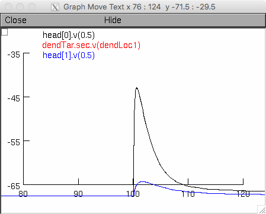

Bloss EB, Cembrowski MS, Karsh B, Colonell J, Fetter RD, Spruston N (2018) Single excitatory axons form clustered synapses onto CA1 pyramidal cell dendrites Nature Neuroscience
This model was contributed by MS Cembrowski. The model requires NEURON which is freely available at http://www.neuron.yale.edu If you need additional help than that provided below, please read this web page https://senselab.med.yale.edu/ModelDB/NEURON_DwnldGuide.cshtml To run the model on unix/linux platforms, compile the mod files in the top level folder by cd'ing to it and typeing nrnivmodl on the command line. Then start with a command like "nrngui mosinit.hoc". The simulation should produce a graph like: 